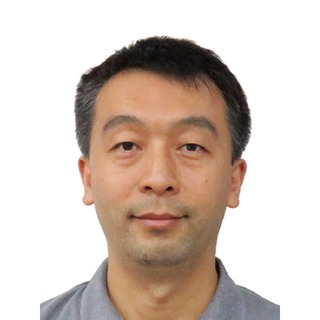

Auckland · Thursday 26 November 2026
WUN–MICCAI Joint Event
Responsible AI for Medical Decisions
The one-day WUN–MICCAI joint event will be held in Auckland on Thursday 26 November 2026, bringing together the end-of-year workshop of the WUN project Responsible AI for Medical Decisions and the MICCAI local event. The event connects researchers, clinicians, students and practitioners working on medical image computing and responsible AI for healthcare. Both communities share a joint morning session and lunch, followed by separate afternoon programmes.
Responsible AI for Medical Decisions is a research project supported by the Worldwide Universities Network (WUN). The project brings together researchers and collaborators across institutions to study human-in-the-loop explainable AI, multimodal medical imaging and report generation, and clinical decision support, with a focus on the transparency, safety, accountability and trustworthy adoption of AI in healthcare. The afternoon WUN session focuses on project updates and future collaboration.
The International Conference on Medical Image Computing and Computer Assisted Intervention (MICCAI) is the premier international conference in medical image computing and computer-assisted intervention. MICCAI 2027, the 30th MICCAI, will be held in Auckland, New Zealand, from 27 September to 1 October 2027. Ahead of the conference, the MICCAI local event brings together the medical imaging and medical AI community in Aotearoa New Zealand.
We warmly invite you to join us!- Date: Thursday 26 November 2026
- Time: 9:00 am – 5:00 pm (Auckland, New Zealand time)
- Morning joint session: PLT1 Lecture Theatre (303-G20), 38 Princes Street, University of Auckland
- Afternoon sessions: Venue to be confirmed
- Catering: Morning tea, light lunch and afternoon tea provided
- Format: In person
Tentative programme
The morning and lunch are shared by both events. In the afternoon, the WUN workshop and the MICCAI local event run separately. All times are in Auckland, New Zealand time.
The programme is provisional and may change as speakers and talk titles are confirmed.
WUN speakers
Morning invited talks
-
Research Assistant Professor
Matthew Lun Wong
Department of Imaging and Interventional Radiology, The Chinese University of Hong Kong
-
Associate Professor
Chris Paton
Liggins Institute, University of Auckland
-
Professor
Jun Zhou
School of Information and Communication Technology, Griffith University
Afternoon talks
-
PhD Student
Jiajun Xiao
WUN project
-
Professor
Yun Sing Koh
School of Computer Science, University of Auckland
-
Associate Professor
Jichao Zhao
Auckland Bioengineering Institute, University of Auckland
-

ProfessorLi Cheng
Department of Electrical and Computer Engineering, University of Alberta
Speakers for the MICCAI session will be announced by the MICCAI local organisers.
Registration
Attendance is free, but registration is required so that we can plan catering and room capacity. Please complete the registration form by Friday 20 November 2026 and let us know about any dietary requirements.
Participants registered for the MICCAI local event are welcome at the joint morning session and lunch. If you also plan to attend the WUN afternoon session, please register using the form above.
Organisers
For enquiries, please contact Xinyu Zhang (xinyu.zhang@auckland.ac.nz) or Jichao Zhao (j.zhao@auckland.ac.nz).